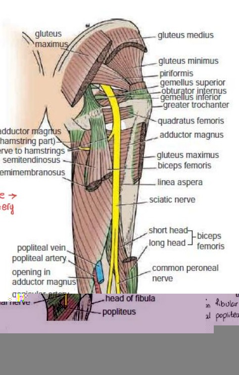
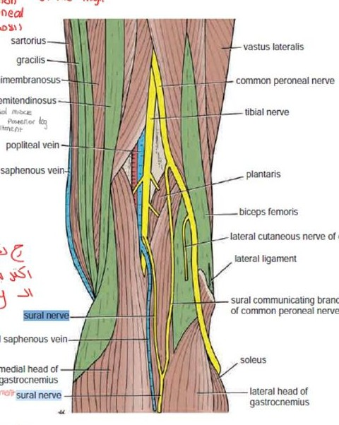

1. Sacral plexus & branches leaving the pelvis
Formation: lumbosacral trunk (lower part of anterior ramus of L4 + anterior ramus of L5) + anterior rami of S1, S2, S3 and upper S4, in the pelvis in front of the sacrum.
The major branches shown below leave the pelvis through the greater sciatic foramen. Use piriformis as a landmark: the superior gluteal nerve and vessels usually pass above it, and the other listed nerves usually pass below.
| Nerve | Roots | Relation to piriformis | Supplies |
|---|---|---|---|
| Superior gluteal | L4, L5, S1 | Above | Gluteus medius, minimus, tensor fasciae latae (TFL) |
| Inferior gluteal | L5, S1, S2 | Below | Gluteus maximus only |
| Sciatic | L4, L5, S1, S2, S3 | Below | Posterior thigh muscles and, through its terminal branches, leg and foot muscles plus most sensation below the knee |
| Posterior cutaneous n. of thigh | S1, S2, S3 | Below | Skin of buttock, back of thigh, popliteal fossa, upper back of leg (purely sensory) |
| N. to quadratus femoris | L4, L5, S1 | Below | Quadratus femoris + inferior gemellus |
| N. to obturator internus | L5, S1, S2 | Below | Obturator internus + superior gemellus |
2. Gluteal nerves
Superior gluteal: divides into a superior branch (gluteus medius) and an inferior branch (medius, minimus, ending in TFL). These abduct and, importantly, stabilise the pelvis during walking. Injury → Trendelenburg sign/gait: pelvis drops on the opposite (swinging) side when standing on the affected leg; the trunk lurches toward the weak side.
Inferior gluteal: gluteus maximus = powerful hip extension (rising from a chair, climbing stairs, running). Injury → difficulty rising/climbing but normal pelvic stability.
3. Sciatic nerve

- Sciatic nerve below piriformis
- Tibial division
- Common fibular division
Largest nerve in the body (L4–S3). Leaves below piriformis, descends behind the thigh under cover of gluteus maximus and the hamstrings. It is really two nerves in one sheath: tibial (from anterior divisions of the plexus) and common peroneal/fibular (from posterior divisions). The classic landmark for its division is the apex of the popliteal fossa. The split can occur higher in the thigh, gluteal region or pelvis.
In the popliteal fossa from superficial to deep: tibial nerve → popliteal vein → popliteal artery.
Before it divides it gives
Muscular: hamstrings (semitendinosus, semimembranosus, long head of biceps, hamstring part of adductor magnus) via the tibial part; the short head of biceps femoris via the common peroneal part (the only thigh muscle supplied by the peroneal component). Articular: knee. Cutaneous: none directly (the sural communicating branch comes later).
- Tibial = posterior leg + sole.
- Common peroneal = lateral (superficial) + anterior (deep) compartments.
- Alternate names: tibial = medial popliteal; common peroneal = lateral popliteal = common fibular. Peroneal and fibular are the same thing.
Surface marking of the sciatic nerve (gluteal region)
- 1st: midpoint between PSIS (posterior superior iliac spine) and the ischial tuberosity.
- 2nd: midpoint between the ischial tuberosity and the greater trochanter.
- Join 1 → 2 with a curved line (convex laterally), then continue vertically down the middle of the back of the thigh to the popliteal fossa apex.
4. Tibial nerve
Larger terminal branch (L4–S3). Arises at the top of the popliteal fossa, lies superficial to the popliteal vein and artery centrally, and enters the posterior compartment by passing deep to (beneath) soleus (tendinous arch). It then runs with the posterior tibial vessels behind the medial malleolus, under the flexor retinaculum, and divides into the plantar nerves.
Branches in the leg ("very important – injury")
| Type | Branch / target |
|---|---|
| Muscular | Both heads of gastrocnemius, plantaris, soleus, popliteus (superficial and deep muscles), then tibialis posterior, flexor digitorum longus, flexor hallucis longus |
| Cutaneous | Medial sural cutaneous n. typically joins a sural communicating branch (from the common peroneal system) to form the sural nerve: skin of lower posterolateral leg, lateral border of the foot and little toe. It runs with the small saphenous vein behind the lateral malleolus. Also medial calcaneal branches: skin of the heel. |
| Articular | Knee joint (and ankle) |
Branches in the sole
| Medial plantar | Lateral plantar | |
|---|---|---|
| Skin | Medial sole + medial 3½ toes | Lateral sole + lateral 1½ toes |
| Muscles | Only 4: abductor hallucis, flexor digitorum brevis, flexor hallucis brevis, 1st lumbrical | All the rest: abductor digiti minimi, flexor digiti minimi brevis, adductor hallucis, flexor accessorius (quadratus plantae), 2nd–4th lumbricals, all interossei |
5. Common peroneal (fibular) nerve

- Common fibular nerve
- Tibial nerve
Smaller terminal branch of the sciatic. Runs along the medial edge of biceps femoris, crosses superficial to the lateral head of gastrocnemius, passes behind the head of the fibula and winds around the neck of the fibula, where its superficial course makes it vulnerable to injury. It pierces peroneus longus and divides there into the superficial and deep peroneal nerves.
Branches before division
Thigh motor supply: the short head of biceps femoris receives a branch from the common peroneal component of the sciatic nerve in the thigh. Articular: knee. Cutaneous: sural communicating branch (joins the sural nerve) and the lateral cutaneous nerve of the calf (skin of upper posterolateral and upper lateral leg).
| Superficial peroneal | Deep peroneal | |
|---|---|---|
| Compartment | Lateral | Anterior |
| Course | Arises within peroneus longus; descends between peroneus longus and brevis; becomes cutaneous in the lower leg. Called the "musculocutaneous nerve of the leg" (2 muscles, then skin). | Arises in peroneus longus; descends deep to extensor digitorum longus; relation to anterior tibial artery: first lateral, then anterior, finally lateral. Passes deep to the extensor retinacula into the foot. |
| Muscles | Peroneus longus, peroneus brevis (evertors) | Tibialis anterior, extensor digitorum longus, extensor hallucis longus, peroneus tertius (dorsiflexors); extensor digitorum brevis in the foot |
| Skin | Lower anterolateral leg + most of the dorsum of foot | Only the cleft between 1st and 2nd toes |
| Joint | — | Ankle |
6. Skin of the leg – who supplies what
| Region of the leg | Nerve (parent) |
|---|---|
| Anteromedial and posteromedial | Saphenous (femoral n., L2–L4: the only femoral branch below the knee) |
| Upper anterolateral / upper posterolateral | Lateral cutaneous n. of the calf (common peroneal) |
| Lower anterolateral + dorsum of foot | Superficial peroneal (common peroneal) |
| Lower posterolateral + lateral foot/5th toe | Sural (tibial + common peroneal contributions) |
| Popliteal fossa + upper back of leg | Posterior cutaneous nerve of the thigh (S1–S3) |
| Heel | Medial calcaneal branches (tibial) |
7. Clinical correlations (quick differential)
| Lesion | Motor loss | Sensory loss |
|---|---|---|
| Superior gluteal | Pelvic drop (Trendelenburg), weak abduction | None |
| Inferior gluteal | Weak hip extension (stairs, rising) | None |
| Sciatic (high) | Hamstrings + all muscles below the knee → foot drop and no plantarflexion | Most sciatic-derived sensation below the knee. The saphenous territory on the medial leg is spared. |
| Proximal tibial | Weak plantar flexion, toe flexion and inversion. Tibialis anterior still contributes to inversion. | Plantar foot, including the heel when calcaneal branches are affected. |
| Common peroneal (fibular neck fracture, tight cast, crossing legs) | Foot drop (high-stepping gait), loss of dorsiflexion and eversion; inversion and plantarflexion preserved | Lower anterolateral leg, dorsum of foot, 1st web space |
| Proximal deep peroneal | Weak dorsiflexion and toe extension. The main evertors are spared. | First dorsal web space. |
| Superficial peroneal only | Weak eversion | Lower lateral leg + dorsum of foot |
| Sural (e.g. vein harvest) | None | Lateral foot/5th toe |
Quick recall
Recall the answer before opening each card.
Which side is weak when the pelvis drops on the right?
The left side, if the left foot is the stance foot. The left gluteus medius and minimus cannot hold the right side of the pelvis level.
Weak dorsiflexion and numbness in the first web space, with preserved eversion?
Proximal deep peroneal nerve. The superficial peroneal nerve still supplies fibularis longus and brevis.
Which sensory landmark distinguishes sural from deep peroneal?
Sural supplies the lateral border of the foot. Deep peroneal supplies the first dorsal web space.
Which four muscles does LAFF stand for?
First lumbrical, abductor hallucis, flexor digitorum brevis and flexor hallucis brevis. These are the classic medial plantar motor targets.
Continue with Lecture 8 on the anterior and lateral leg.
8. MCQs
No incorrect answers in this attempt yet.
References
- Core revision material from the supplied handout, attributed to Dr. Dima Hamarsheh, BAU.
- Cadaveric study of sciatic nerve division and its relation to piriformis
- Cadaveric study of sural nerve formation